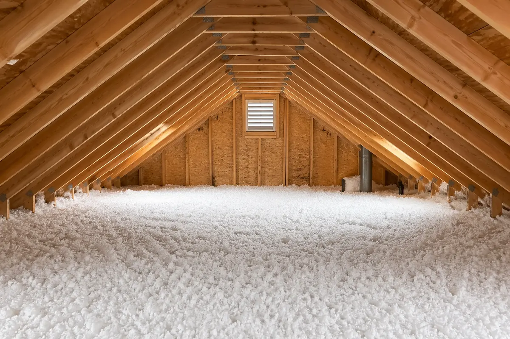

It is about reflected radiant heat
Radiant barrier is not the same thing as adding thermal resistance to the attic floor.
Resources • Heat control
Radiant barrier gets searched by homeowners who are trying to solve attic heat and hot upstairs rooms. That makes sense, but radiant barrier and attic insulation do different jobs. The better question is whether the attic needs heat reflection, thermal resistance, air sealing, ventilation support, or a broader correction.
What radiant barrier is trying to do
Radiant barrier is not the same thing as adding thermal resistance to the attic floor.
Radiant barrier claims can fall apart when the product is installed in the wrong context or expected to solve the wrong problem.
A radiant barrier does not remove contaminated insulation, close bypasses, or correct thin coverage.
What attic insulation is trying to do
A stronger attic insulation layer helps slow heat gain and heat loss across the ceiling plane.
Insulation needs consistent depth and a prepared attic floor to perform as intended.
Hot upstairs rooms can involve insulation, airflow, and leakage at the same time.
How to make the heat-control decision
Heat buildup, weak insulation, air leakage, and ventilation details can all contribute to the same homeowner complaint.
The strongest recommendation explains why the chosen scope matches the attic instead of leaning on a universal product promise.
Sometimes the next step is insulation. Sometimes it is sealing, ventilation support, or cleanup before anything else.
Best next pages

Core service
Upgrade underperforming attic insulation so the whole home feels steadier, cleaner, and more efficient.
View insulation serviceVentilation support
Support attic airflow with fan solutions that help reduce trapped heat and back up the rest of the attic strategy.
View fan serviceComfort guide
Use this guide when radiant barrier research is really coming from hot bedrooms, bonus rooms, or second-floor comfort issues.
Open comfort guideLocal service paths
The local pages help turn heat-control research into an inspection-backed attic recommendation.
Salt Lake City • Local insulation path
Need attic insulation in Salt Lake City? Good Attic helps with blown-in attic insulation, old insulation removal, air sealing, hot and cold rooms, and energy waste with a cleaner, more complete attic plan.
Open local serviceSt. Louis • Local insulation path
Need attic insulation in St. Louis? Good Attic helps with blown-in attic insulation, hot upstairs rooms, winter heat loss, old insulation removal, and air sealing when the attic needs a fuller fix.
Open local serviceKansas City • Local insulation path
Need attic insulation in Kansas City? Good Attic helps with blown-in attic insulation, attic air sealing, winter heat loss, hot upstairs rooms, and underperforming insulation problems.
Open local serviceFAQ
No. Radiant barrier and insulation address different parts of attic heat movement. One should not be treated as a universal substitute for the other.
Radiant barrier can help in some heat-gain situations when installed correctly and when the attic conditions support that type of recommendation.
Many comfort problems come from thin insulation, attic floor leakage, poor coverage, or ventilation issues rather than radiant heat alone.
Next step
The attic assessment is where the heat-control question gets tied to the actual conditions in the attic.
Best next pages
These are the most relevant next pages from here based on the current attic topic, market, or support path.
Best next page
Review Attic Insulation Services to understand the core attic service path before moving into a local market page.
Open pageBest next page
Use Attic Insulation in Salt Lake City when you want attic guidance tied to a specific metro and service instead of a broader overview page.
Open pageBest next page
Use Attic Insulation in St. Louis when you want attic guidance tied to a specific metro and service instead of a broader overview page.
Open pageBest next page
Use Attic Insulation in Kansas City when you want attic guidance tied to a specific metro and service instead of a broader overview page.
Open page